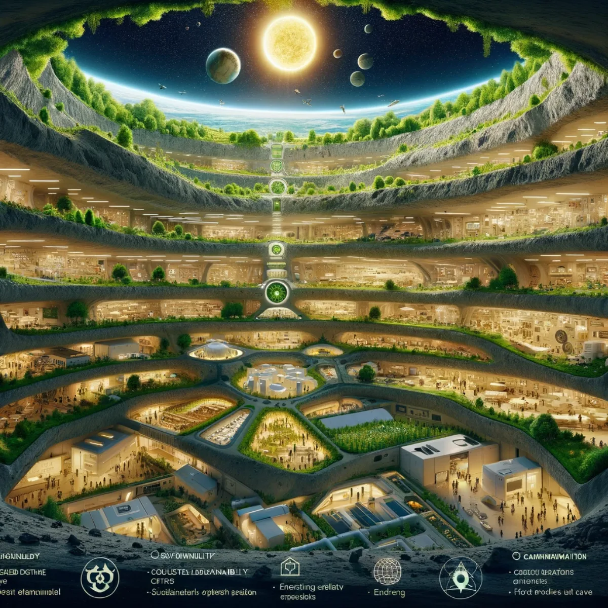

Ownership evidence
Who holds the assets, liabilities, voting rights and economic interests?

15 / Development and evidence
The architecture reaches from an operating business to long-lived civilisation. Its milestones distinguish present work, proposed next steps and horizons dependent on choices not yet made.
Explore, compare, question. Luke's proposed architecture, source records and bounded tools. No purchase, sign-up or agreement is required.
Public proposalThe programme is not made complete by naming a date. A proposed stage would record its scope, resources, decisions, evidence and reasons to continue, change direction or stop. No business acquisition, institutional endorsement or universal entitlement is announced by this website.
A verified target register, a negotiated transaction, a funded operating plan, a staff handover and an independently understandable financial record would establish different things. The public workbench keeps them distinct. Early learning could concern a single organisation without reducing the wider ambition to that organisation.
Who holds the assets, liabilities, voting rights and economic interests?
Are customers served, employees paid and critical functions maintained?
What learning, choice and time benefits actually reach people?
The intended reusable asset is a succession and development method that can be adapted by other groups. Repetition would carry the lessons and preserve local choice, rather than copy one institution everywhere. The site's templates, code, source records and licence make that work inspectable.
Source trail: D09 · The B.E.L.A.U. Protopian Gambit P04 · P4A Oceania P05 · Native Nations of the World
Publish the architecture, source shelf and bounded tools. Establish a verified view of potential participating businesses rather than rely on exploratory marketplace counts.
Current website; proposed operating workA negotiated acquisition or partnership, with funding, management, employee arrangements, permitted data and a measurable transition plan. No transaction is announced here.
Proposed; no fixed dateTest paid learning, supervised rotations, management continuity, shared services and funded time away. Record outcomes before generalising.
Proposed; evidence-dependentLuke proposes comprehensive reflection on Australian law and international obligations before a cyber-republic referendum by 2031. It is not an announced referendum, an entitlement to one or a forecast of an outcome.
Author's proposed horizonExplore links with Brisbane's wider learning, events and volunteer context. This workbench claims no official Olympic or Paralympic partnership.
Project horizon; no partnership claimedThe proposed global art, music and reflection convergence around the 50th anniversary of Live Aid, with communities choosing their own participation.
Proposed gatheringLong-lived infrastructure, habitats, knowledge, culture and Kardashev galactic games remain a horizon for research, imagination and progressively demonstrated capability.
Long-horizon explorationSource trail: P03 · P4A P10 · The Long Game: Grain by Grain D04 · Do Not Put All Our Eggs in One Basket S03 · Australian Electoral Commission: Referendums